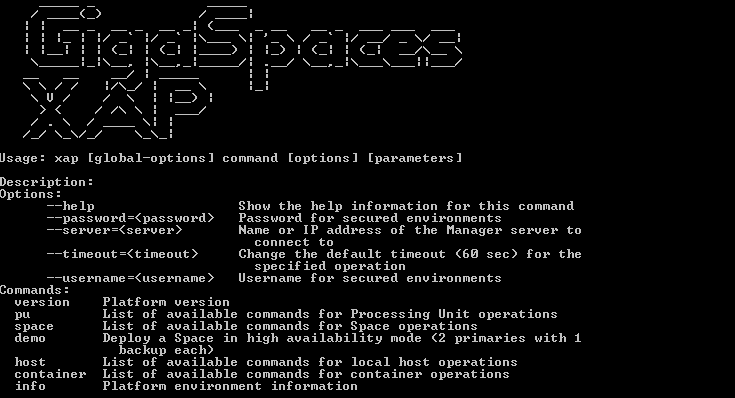

GigaSpaces provides a CLI tool for administering both
Users that are administering a xap script. Users that are administering insightedge CLI script, which contains all of the actions available with the xap script, plus additional options where relevant for administering
The image below shows the screen that is displayed when you run the xap script.

Use the --help command (or -h) to see the syntax of a specified CLI command, or a list of all available commands. The list of commands may vary depending on whether you are running the insightedge host run-agent --help contains all the actions available under xap host run-agent --help, plus additional options for administering the Spark master and worker components.
The CLI connects to the REST Manager API using the name or IP address of the Manager server. Configuration is applied from one of the following:
XAP_MANAGER_SERVERS environment variable.--server command line option.localhost as the server to connect to (if none of the above was applied).CLI interactive shell is available for all platforms. To activate the interactive mode navigate to <XAP-HOME>/bin and type xap or insightedge. CLI help is displayed and Interactive mode continues to guide you in completing CLI commands by:
[TAB]Enter ctrl-D to exit the interactive shell.
Bash completion in the CLI is available for Linux and MacOS X users. After activating the autocomplete feature (as explained below), navigate to <XAP-HOME>/bin and type xap [TAB][TAB] or insightedge [TAB][TAB]. This will complete the command sequence, or list all the available completions if there are multiple options.
Bash completion for all commands in the CLI is available for Linux and MacOS X users. After activating the autocomplete feature (as explained below), navigate to <XAP-HOME>/bin and type <command> [TAB][TAB]. This will complete the command sequence, or list all the available completions if there are multiple options.
If you are using the CLI in a MacOS X environment, the autocomplete script will only work if bash version 4 is installed on your machine. After installing the required bash version, add the shell to the allowed shells and make it the default shell.
When using autocomplete, type ./xap [TAB][TAB] or ./insightedge [TAB][TAB].
You can add xap as an alias to the .bash_profile, in order to simplify using autocomplete.
The autocomplete script is located in <XAP-HOME>/tools/cli. There are two ways to install autocomplete.
<XAP-HOME>/tools/cli and source the completion script: source xap-autocomplete or source insightedge-autocomplete.<XAP-HOME>/bin and type: xap [TAB][TAB] or insightedge [TAB][TAB].When you leave the bash session, autocomplete stops working.
xap-autocomplete or insightedge-autocomplete file in a bash_completion.d folder. The folder may appear in the following locations: /etc/bash_completion.d /usr/local/etc/bash_completion.d ~/bash_completion.d (create one if absent).~/.bash_profile and add the following code: source /usr/local/etc/bash_completion.d/xap-autocompletesource ~/.bash_profile.<XAP-HOME>/bin and type: xap [TAB][TAB] or insightedge [TAB][TAB].alias xap = "cd <XAP-HOME>/bin && xap"If you want to generate a new autocomplete script (for example, if you changed the name of the xap or insightedge script) do so as follows:
Go to <XAP-HOME>/tools/cli and run the following command:
java -cp "../../lib/required/*:*" MAIN_COMMAND ALIAS
The MAIN_COMMAND value is different for each product and edition. Use one of the following:
org.gigaspaces.cli.commands.Autocompletecom.gigaspaces.cli.commands.Autocompleteorg.insightedge.cli.commands.Autocompletecom.insightedge.cli.commands.AutocompleteALIAS is optional; use it if you changed the name of the command.
After running java -cp "../../lib/required/*:*" MAIN_COMMAND ALIAS, the autocomplete script will appear in <XAP-HOME>/tools/cli.
To run a local Manager server and a web browser client, type xap host run-agent --auto or insightedge host run-agent --auto.
To view a list of the running agents, type xap host list or insightedge host list.
If you've recently upgraded to version 12.3 or higher, note that this is a new version of the CLI tool and uses a different syntax and command set. We encourage using this new version, but if you need information about the old CLI commands, refer to the GigaSpaces CLI pages in the Legacy Tools section.